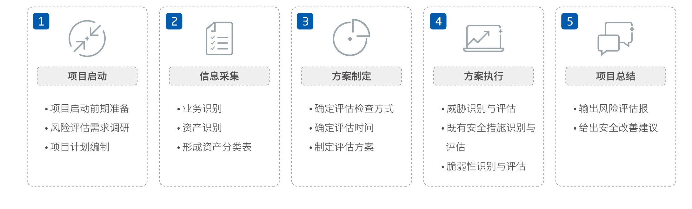

信息安全风险
由于资产的重要性，人为或自然的威胁利用信息系统及其管理体系的脆弱性，导致安全事件一旦发生所造成的影响。
信息安全风险评估
- 依据有关信息安全技术与管理标准，对信息系统及由其处理、传输和存储的信息的机密性、完整性和可用性等安全属性进行评价的过程。
- 它要评估资产面临的威胁以及威胁利用脆弱性导致安全事件的可能性，并结合安全事件所涉及的资产价值来判断安全事件一旦发生对组织造成的影响，即信息安全的风险。
目标市场
- 政策合规需求——等保2.0正式实施后，风险评估服务来自于等保合规政策的强制要求和客户业务安全整改的需要。
- 业务实用需求——通过开展信息安全风险评估，可发现信息安全存在的主要问题和矛盾，找到解决关键问题的办法。
- 关键业务需求——可以有效的防范和降低关键业务信息系统的信息安全风险，将风险控制在可接受的水平，从而最大限度地提升关键业务信息系统的安全保障能力。
赛博特安风险评估服务
- 资产评估：确定资产的信息安全属性受到破坏后，对信息系统所造成的影响。
- 威胁评估：通过技术手段，统计数据和经验判断来确定信息系统所面临的威胁。
- 脆弱性评估：发现和分析信息系统中存在的可被威胁利用的缺陷。
- 现有安全措施评估：评估安全措施的部署，使用和管理情况，确定措施保护的资产范围，对系统面临风险的消除程度。
- 安全建议：提出风险控制方式和控制措施的建议。
赛博特安安全风险评估服务的流程
